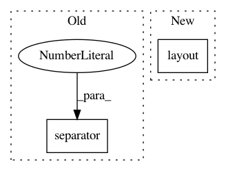

51aa7adbc1371e159afb28b7b42bcec876d1635c,Orange/widgets/unsupervised/owdistancetransformation.py,OWDistanceTransformation,__init__,#OWDistanceTransformation#,38
Before Change
box = gui.auto_commit(self.controlArea, self, "autocommit", "Apply",
checkbox_label="Apply on any change")
gui.separator(box, 20)
box.layout().addWidget(self.report_button)
def set_data(self, data):
self.data = data
After Change
box = gui.auto_commit(self.buttonsArea, self, "autocommit", "Apply",
checkbox_label="Apply on change", box=None)
box.layout().insertWidget(0, self.report_button)
box.layout().insertSpacing(1, 8)
def set_data(self, data):
self.data = data
In pattern: SUPERPATTERN
Frequency: 3
Non-data size: 2
Instances
Project Name: biolab/orange3
Commit Name: 51aa7adbc1371e159afb28b7b42bcec876d1635c
Time: 2016-04-15
Author: janez.demsar@fri.uni-lj.si
File Name: Orange/widgets/unsupervised/owdistancetransformation.py
Class Name: OWDistanceTransformation
Method Name: __init__
Project Name: biolab/orange3
Commit Name: e8270c8498cddaf3ec9e3acc22e2ec02e6832f04
Time: 2015-12-18
Author: janez.demsar@fri.uni-lj.si
File Name: Orange/widgets/data/owdatasampler.py
Class Name: OWDataSampler
Method Name: __init__
Project Name: biolab/orange3
Commit Name: 51aa7adbc1371e159afb28b7b42bcec876d1635c
Time: 2016-04-15
Author: janez.demsar@fri.uni-lj.si
File Name: Orange/widgets/regression/owlinearregression.py
Class Name: OWLinearRegression
Method Name: add_bottom_buttons